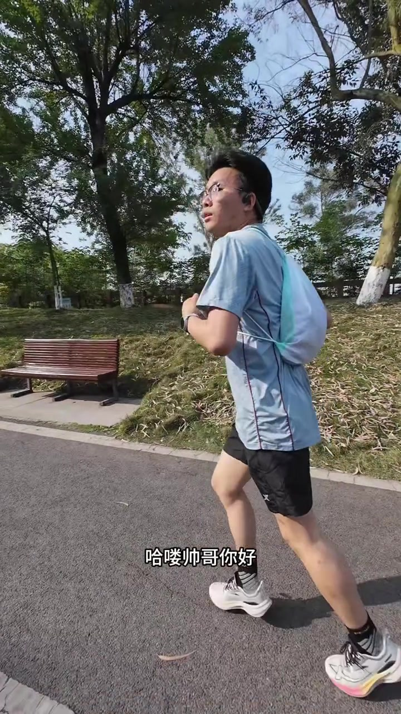
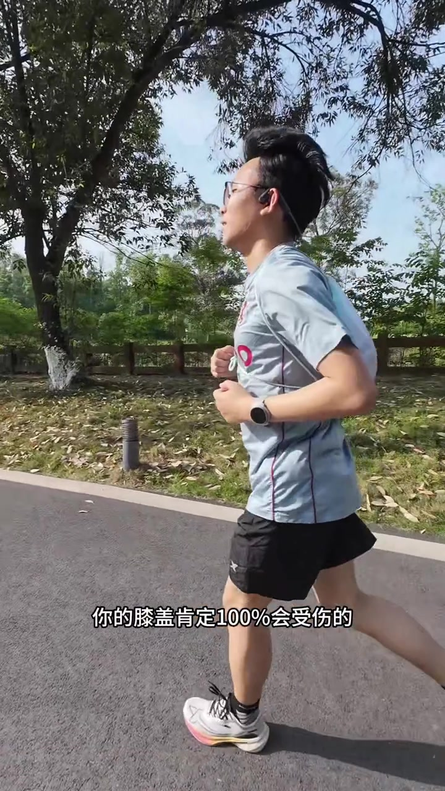
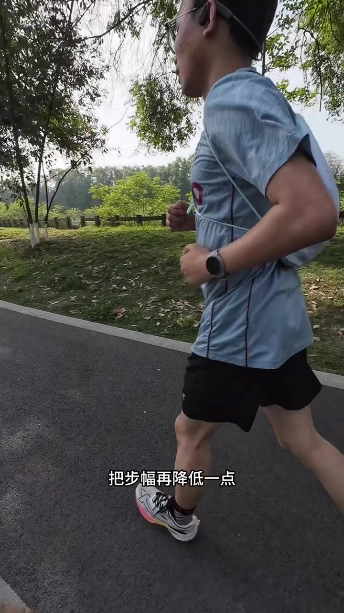
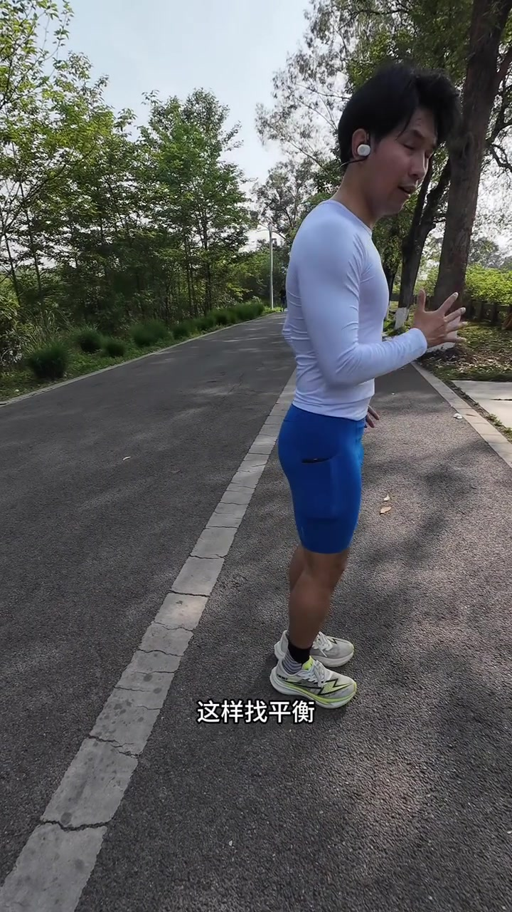
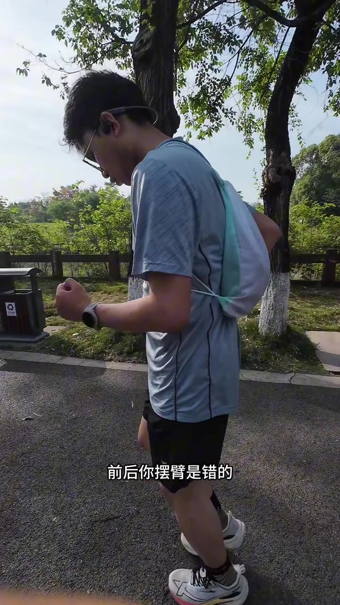
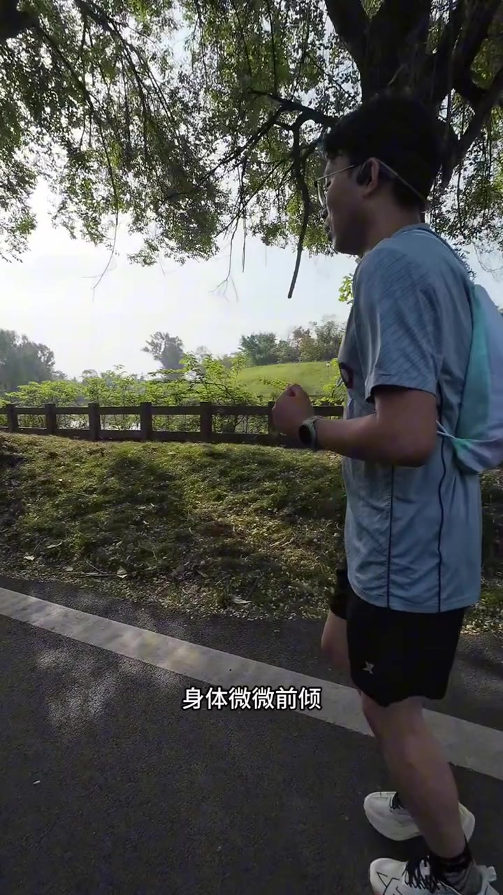
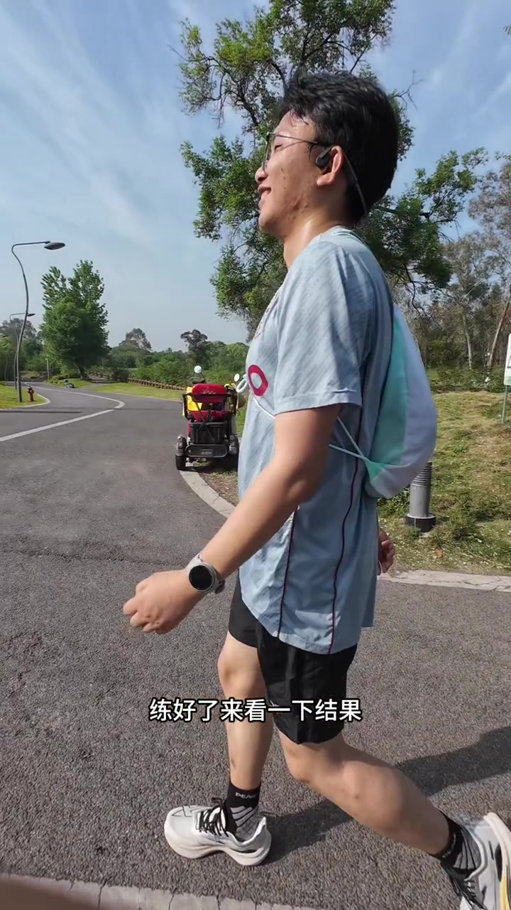

开场 · 00:00
公园路上，先把人拦住
镜头跟着一位戴眼镜、骨传导耳机、浅蓝灰速干衣、黑短裤、白色抽绳小包的年轻跑者。字幕先跳出「前面小哥哥跑姿不对，咱们交流一下」，随后作者上前打招呼：「哈喽帅哥你好，可以交流一下吗？我经常在这跑步的。」对方应了声「对」。
作者直说：看对方跑得挺累，动作也有问题；因为都是跑步人，想用心交流一下。话题标签是「无伤跑到老」——整段视频就是一次街头现场纠错，不是棚内示范课。

诊断 · 00:21
先点名：脚跟落地、上身松、扬头
作者连珠炮给出观察：脚后跟落地偏多、上身没有收紧、扬着头——「你这样跑很累的」。他提出可以教一种更轻松、还能避免受伤的跑法，并确认对方有没有时间。
闲聊里确认对方刚跑了 2.7 公里；背小包是因为「没有存的地方」。作者原以为对方是越野赛装备，但一看动作又不像——于是把话题拉回核心问题。
步频 · 01:04
最大风险：脚跟落地 + 步频太低
作者把「最大的问题」说死：脚后跟落地，再加上步频又低，跑久了膝盖「肯定百分之百会受伤」。他要求现在就解决。Whisper 把「步频」识别成「不平」，后文凡出现「不平」「不平气」，语境上都是步频（spm）。
因果链也当场讲清：脚跟落地是因为上身没收紧，包括小腹。他让对方按腹部检查收紧感，对方确认「是收紧的」。接着要求把步幅再降低一点，会感觉跑得更轻松；再对照表盘——现在步频才 160，而目标要 180 以上。


落地 · 02:00
小碎步试落地，再原地「机器人」找脚掌感
跟练先从「步子小一点」开始，反复喊「再小点」「小碎步」，并纠正：不要点脚尖、不要纯前脚掌落地，要用整个脚掌下落。随后暂停，专门找「勾脚尖 + 整脚踏地」的感觉。
作者演示原地练法：双手张开找平衡，像机器人一样一二三四踏地；勾起脚尖后用整个脚踏地，上身可微微前倾一点，动作是直上直下，不是往后拉。找到接触地面的感觉后，再把手收回成平时跑步姿势。
页末转录保留 Whisper 原文，其中「不平→步频」「不服→步幅」「摆壁→摆臂」「七七人→机器人」「小随步→小碎步」等为常见误识；正文按语境校正叙述，不改原始分段。

摆臂 · 03:50
肘角固定前后送，不要往下敲
手收回跑步姿势后，作者立刻抓摆臂：手要弯曲，约 90 度以内；对方反复「翘」手臂被叫停——「你摆臂是错的」。正确做法不是往下敲，而是肘部相对固定、前后送；小于 90 度可以，大于 90 度就费力。
接着做原地小慢跑，继续纠「又是翘」，把肘弯到指定位置，口令「前后、前后」。画面里字幕也同步打出「摆臂是错的」。

姿态 · 05:08
挺胸、头看斜下方，步子继续缩小
口令叠加到上身：挺胸吸气、头看斜下方、脖子要收。步子「小着、再小着」。作者解释为什么头不能扬——一旦疲劳，头更容易往上抬；慢跑时应微微看斜前方/往下看。三四分配速时头可以略抬一点，但当下是慢跑，不要扬头。

提频 · 05:50
跟口令对脚，步频从 160 抬到 166
第一次复盘：步频提到约 168/166（字幕后文写「166 刚才 160」），作者喊「再加油，提升到 180」。随后大量「一二三四」「没跟上」「跟着我的脚一起」「踏、踏」「步子小点」——强调动作慢一点，不要为了快而乱；上身稳住、略前倾；自己练时用步频跟着练。
中段还提醒「腰要协调」（Whisper 记成「腰斜几了」），并在步子过大时拉回小步。整段是典型的现场口令课：节奏、落地、上身同时加压。
收束 · 07:55
练一会儿再看结果：步频上来了
作者说先暂停练习，练好了再看结果。练完后字幕打出「166 刚才 160 哈」，口播也确认「看步频上来了」。最后口令「加油、保持住、越来越好」，然后礼貌收场：「那我就走了，不打扰了，拜拜。」

这条视频按时间记住什么
诊断（脚跟落地 + 低步频 + 扬头）→ 缩步幅、提步频到 180+ → 勾脚尖整脚踏地的机器人练法 → 摆臂肘固定前后送 → 头看斜下方、微前倾 → 跟口令对脚，步频从约 160 提到约 166。完整口令与对白见下方转录。